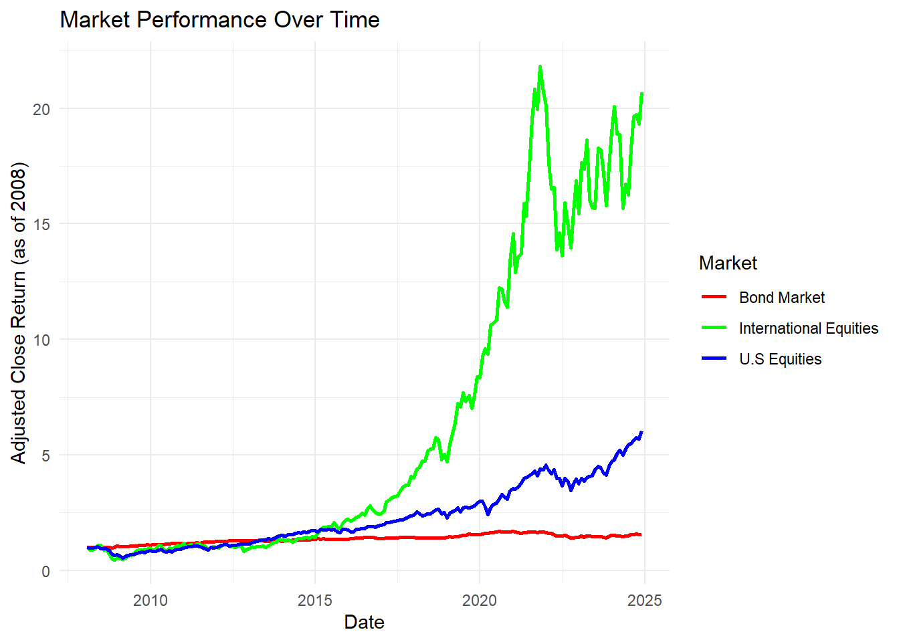
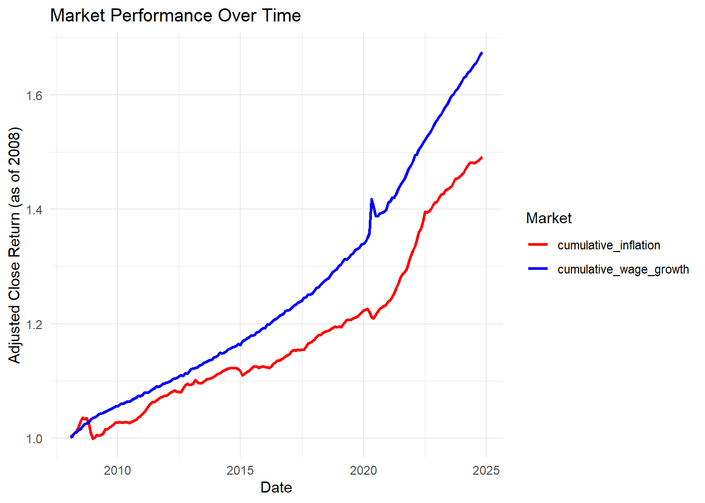
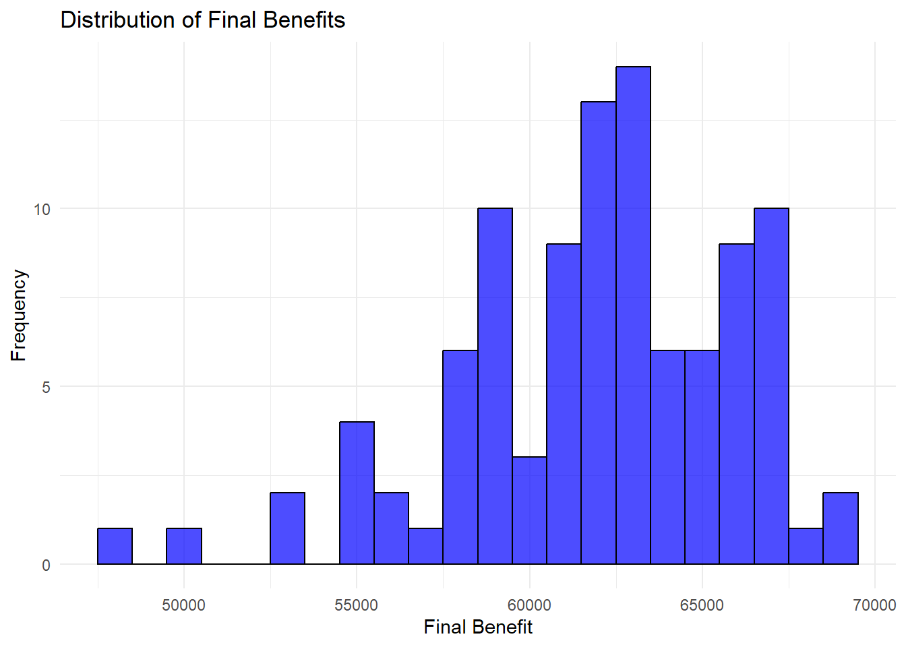
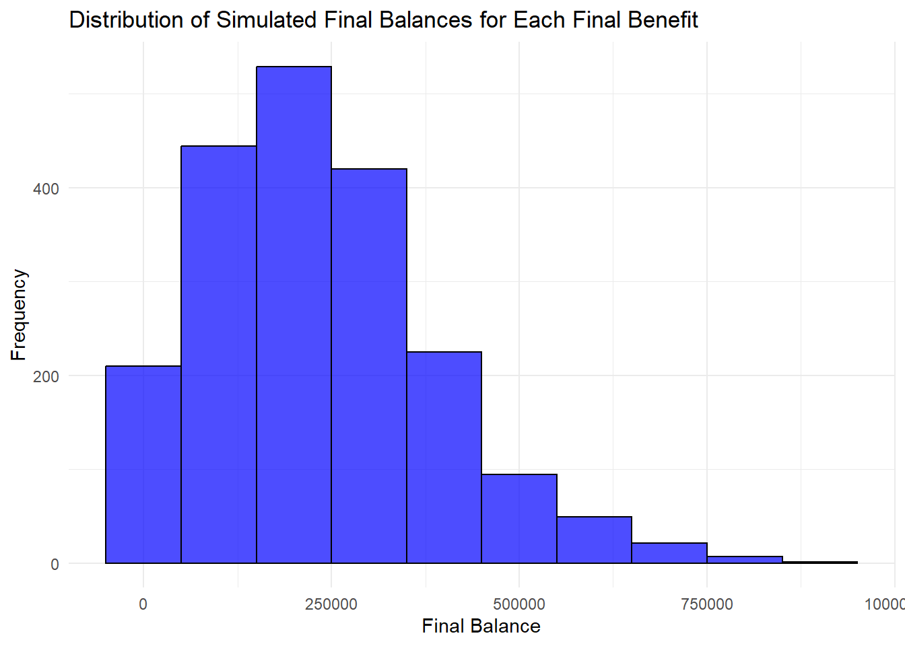
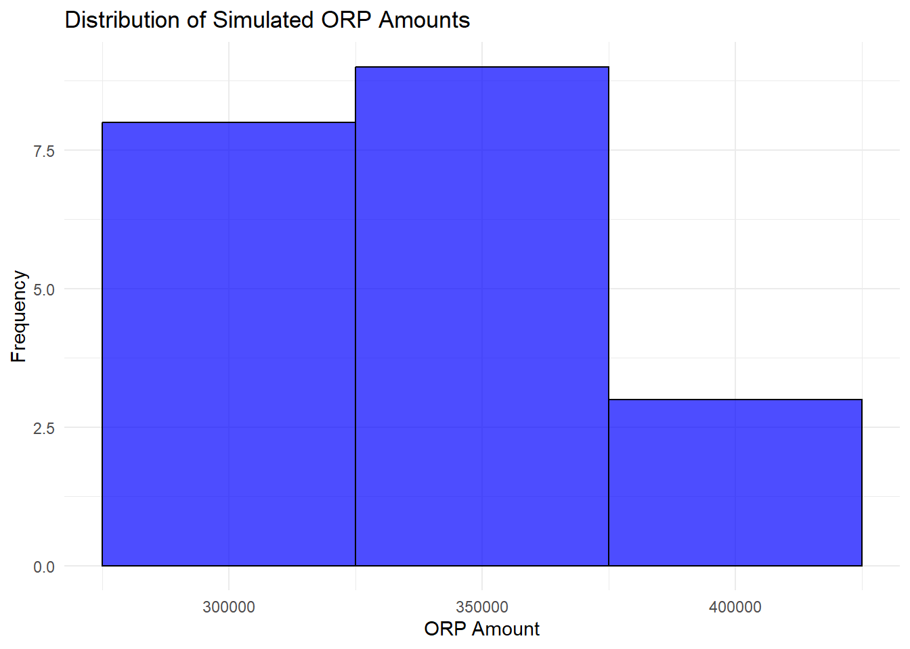
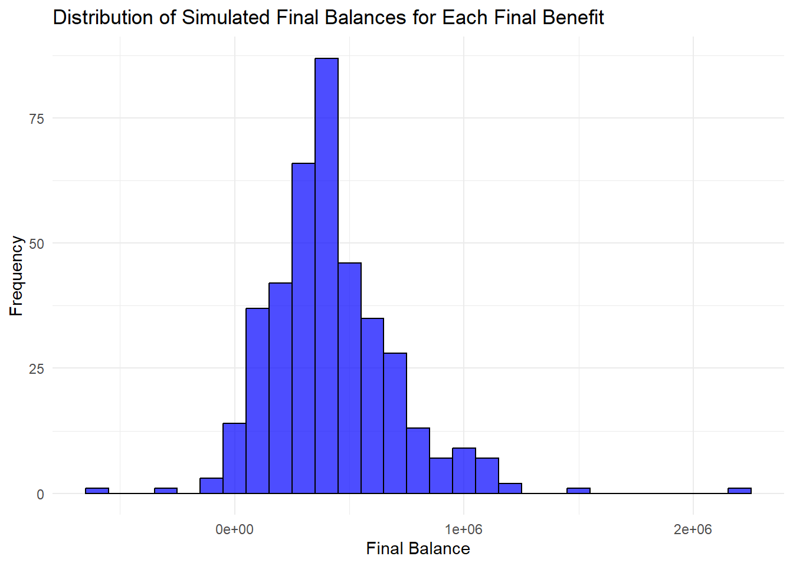

library(lubridate)
library(httr2)
library(dplyr)
library(ggplot2)
library(tidyr)
library(fuzzyjoin)
library(purrr)Will Peters STA9750-2024-FALL MP04
College Retirement Plans
As an introduction to this review of College Retirement Plans, I will note that the numbers being used are not predictors of future performance and one should consider there own investment goals, risk appetite and length of savings when implementing a plan to review and implement the investment strategy that best aligns with each person’s goals.
To get started, this review can be useful beyond a Retirement plan, as it shows the performance of different asset classes, across the years and the compound annual growth rate (CAGR) in the time frame that we are analyzing. This topic is of great interest as the original plan was you work for 45 years (approximately from 20-65/retirement age) and you are balancing the need to sustain and enjoy yourself in the short term, consider holidays, renting, restaurants. This is compared to the long term goals of investments supporting you whilst you are in retirement mode, and so the goal is save up enough money such that you can live off the investments or the fruits of you labors.
For this analysis I will be looking at a CUNY employee who wants to save and live a cash strapped life in retirement and as such will be working for only 16-18 years with a very restrictive lifestyle trying to adopt the Financial Independence Retire Early (FIRE) movement.
As with most of my analysis, I want it to be interactive and provide my code, however will be hiding the code, so it isn’t overwhelming and can be read as a report.
show the code for data libraries utilized in the report
Setting up API’s for analysis
For the research that will be performed I needed to have an api key for both AlphaVantage and Fred. It is also a fun experiment, as you start to get more skilled in extracting through API’s instead of reading in csv and excel files every time.
Task1/2 read in the code for password extraction and saving it for detailed use
alpha_key <- readLines("Alphakey.txt")
Fred_key <- readLines("Fred Key.txt")AlphaVantage
So for the first piece of analysis that we will be doing, it will be extracting information from AlphaVantage and so will be establishing the AlphaVantage queries.
Setting up base functionality of AlphaVantage
#Define the API endpoint and parameters
base_url_Alpha <- "https://www.alphavantage.co/query"
function_type <- "TIME_SERIES_MONTHLY_ADJUSTED"To start off we will begin by extracting details around the U.S Equities market, this part of the investigation, shows the impact that compounding investment, and the CAGR of the U.S market shows how quickly a dollar invested will grow (compared to the dollar stored under the mattress).
Extracting U.S Markets
symbol <- "SPY" # Replace with your desired stock symbol
response <- request(base_url_Alpha) |>
req_url_query(
`function` = function_type,
symbol = symbol,
outputsize = "full", # Full historical data
apikey = alpha_key
) |>
req_perform()
# Parse the JSON response
data <- resp_body_json(response, simplifyVector = TRUE)
# Extract time series data
U.S_Equity_Market <- data[["Monthly Adjusted Time Series"]]
U.S_Equity_Market_df <- as.data.frame(do.call(rbind, U.S_Equity_Market))
U.S_Equity_Market_df <- do.call(rbind, U.S_Equity_Market)
U.S_Equity_Market_df <- as.data.frame(U.S_Equity_Market_df, stringsAsFactors = FALSE)
U.S_Equity_Market_df$Date <- rownames(U.S_Equity_Market_df)
rownames(U.S_Equity_Market_df) <- NULL
# Convert columns to apprORPiate types
U.S_Equity_Market_df <- U.S_Equity_Market_df |>
mutate(across(-Date, as.numeric)) |>
mutate(date = as.Date(Date)) |>
mutate(market = "U.S Equities") |>
select(date,`5. adjusted close`,market)
# Display the first few rows
head(U.S_Equity_Market_df) date 5. adjusted close market
1 2024-11-29 602.5500 U.S Equities
2 2024-10-31 568.6400 U.S Equities
3 2024-09-30 573.7600 U.S Equities
4 2024-08-30 561.9538 U.S Equities
5 2024-07-31 549.1232 U.S Equities
6 2024-06-28 542.5534 U.S EquitiesNext we move onto downloading the performance of the International equities market, denoted by MSCI. The investments in international markets,is a useful strategy to remove country specifc risks.
Extracting International Equities
symbol <- "MSCI" # Replace with your desired stock symbol
# Create and perform the request
response <- request(base_url_Alpha) |>
req_url_query(
`function` = function_type,
symbol = symbol,
outputsize = "full", # Full historical data
apikey = alpha_key
) |>
req_perform()
# Parse the JSON response
data <- resp_body_json(response, simplifyVector = TRUE)
# Extract time series data
International_Equity_Market <- data[["Monthly Adjusted Time Series"]]
International_Equity_Market_df <- as.data.frame(do.call(rbind, International_Equity_Market))
International_Equity_Market_df <- do.call(rbind, International_Equity_Market)
International_Equity_Market_df <- as.data.frame(International_Equity_Market_df, stringsAsFactors = FALSE)
International_Equity_Market_df$Date <- rownames(International_Equity_Market_df)
rownames(International_Equity_Market_df) <- NULL
# Convert columns to apprORPiate types
International_Equity_Market_df <- International_Equity_Market_df |>
mutate(across(-Date, as.numeric)) |>
mutate(date = as.Date(Date)) |>
mutate(market = "International Equities") |>
select(date,`5. adjusted close`,market)
head(International_Equity_Market_df) date 5. adjusted close market
1 2024-11-29 609.6300 International Equities
2 2024-10-31 569.6652 International Equities
3 2024-09-30 581.3637 International Equities
4 2024-08-30 579.0300 International Equities
5 2024-07-31 537.7750 International Equities
6 2024-06-28 479.0908 International EquitiesIf the reader is more risk averse then they should consider Bonds it yields a lower rate of return, however is less risky and perfect for a rainy day fund or more conservative investment strategy.
Extracting Bond information
symbol <- "BND" # Replace with your desired stock symbol
function_type <- "TIME_SERIES_MONTHLY_ADJUSTED"
# Create and perform the request
response <- request(base_url_Alpha) |>
req_url_query(
`function` = function_type,
symbol = symbol,
outputsize = "full", # Full historical data
apikey = alpha_key
) |>
req_perform()
# Parse the JSON response
data <- resp_body_json(response, simplifyVector = TRUE)
# Extract time series data
Bond_Market <- data[["Monthly Adjusted Time Series"]]
Bond_Market_df <- as.data.frame(do.call(rbind, Bond_Market))
Bond_Market_df <- do.call(rbind, Bond_Market)
Bond_Market_df <- as.data.frame(Bond_Market_df, stringsAsFactors = FALSE)
Bond_Market_df$Date <- rownames(Bond_Market_df)
rownames(Bond_Market_df) <- NULL
# Convert columns to apprORPiate types
Bond_Market_df <- Bond_Market_df |>
mutate(across(-Date, as.numeric)) |>
mutate(date = as.Date(Date)) |>
mutate(market = "Bond Market") |>
select(date,`5. adjusted close`,market)
head(Bond_Market_df) date 5. adjusted close market
1 2024-11-29 73.6000 Bond Market
2 2024-10-31 72.8215 Bond Market
3 2024-09-30 74.6557 Bond Market
4 2024-08-30 73.6870 Bond Market
5 2024-07-31 72.6335 Bond Market
6 2024-06-28 70.9621 Bond MarketFred information
So similar to before we are now also going to be establishing the Fred query where we will be including details of Inflation, Short-term debt returns and Wage Growth. This is always one of the controversies over the last few decades as to whether wage growth is keeping up with capital investments, and so I separated these two tables, as I don’t want to start an argument over the kitchen table.
Extracting Inflation information
base_url_Fred <- "https://api.stlouisfed.org/fred/series/observations"
series_id <- "CPIAUCSL" # This is the seried ID for Inflation or the Consumer Price Index (CPI)
# Build API Request this should be familiar to most people who have read my assignments
response <- request(base_url_Fred) |>
req_url_query(
api_key = Fred_key,
file_type = "json",
series_id = "CPIAUCSL"
) |>
req_perform()
# Parse Response
data <- resp_body_json(response, simplifyVector = TRUE)
# Extract Observations
inflation_df <- data$observations
inflation_df <- inflation_df |>
mutate(
date = as.Date(date),
value = as.numeric(value)
) |>
select(date, value) |>
arrange(date) |>
mutate(
inflation = 1 + (value / lag(value) - 1) ,
Information = "Inflation"# Monthly percentage change
)# Retain only date and CPI valueSo now that inflation has been analysed, we can move onto wage data, there are a few sources, so the next analysis could be utilizing a different base. For the purposes of my investigation I used this source and that is part of the risk and challenge that you face is what is the correct metric and how much stress testing do you apply.
Wage data
#Build API Request
response <- request(base_url_Fred) |>
req_url_query(
api_key = Fred_key,
file_type = "json",
series_id = "CES0500000003" ) |>
req_perform()
# Parse Response
data <- resp_body_json(response, simplifyVector = TRUE)
# Extract Observations
observations <- data$observations
# Convert to Data Frame
wage_data <- data$observations
wage_data <- wage_data |>
mutate(
date = as.Date(date),
value = as.numeric(value)
) |>
select(date, value) # Retain only date and wage value
# Calculate Wage Growth (Month-over-Month or Year-over-Year)
wage_data <- wage_data |>
arrange(date) |>
mutate(
wage_growth_rate = 1 + (value / lag(value) - 1) ,
Information = "wage_data"# Monthly percentage change
)Finally we look at the Short-term debt returns or Treasury-yield data, which has a maturity (day the debt expires and the original investment is repaid) is 1-3 years.
Treasury_yield_data
#Treasury Yield Data#
# Build API Request
response <- request(base_url_Fred) |>
req_url_query(
api_key = Fred_key,
file_type = "json",
series_id = "GS2"
) |>
req_perform()
# Parse Response
data <- resp_body_json(response, simplifyVector = TRUE)
treasury_yield_data <- data$observations |>
mutate(
date = as.Date(date),
value = as.numeric(value)
) |>
select(date, value)
# Extract Observations
treasury_yield_data <- treasury_yield_data |>
arrange(date) |>
mutate(
treasury_return = 1 + (value / lag(value) - 1) ,
Information = "short-term debt"# Monthly percentage change
)Data Analysis - Initial
Market Investments
I am going to start by stacking the market investments. Side note, as someone who is in his late 20’s my time horizon is 30-40 years and as such I tend to be invested in riskier asset classes to take advantage of higher CAGR with more risk.
Investment Market performance
Combined_Market_df <- bind_rows(
U.S_Equity_Market_df,
International_Equity_Market_df,
Bond_Market_df
) #Combining the three investment classes into one table to compare like for like performance.
Normalized_Market_df <- Combined_Market_df |>
group_by(market) |>
mutate(
adjusted_close = `5. adjusted close`,
base_value = adjusted_close[date == as.Date("2008-01-31")], # Get value on 2008-01-01 for each market
normalized_close = adjusted_close / base_value # Normalize adjusted close
) |>
ungroup()
ggplot(data = Normalized_Market_df |> filter(date >= as.Date("2008-01-01")), aes(x = date, y = `normalized_close`, color = market)) +
geom_line(size = 1) + # Line plot with separate colors for each market
labs(
title = "Market Performance Over Time",
x = "Date",
y = "Adjusted Close Return (as of 2008)",
color = "Market"
) +
theme_minimal() +
scale_color_manual(values = c("U.S Equities" = "blue",
"International Equities" = "green",
"Bond Market" = "red"))
The graph above shows the performance of these investments from 2008-2024 to show how much a dollar invested would have grown over time.
Cost of Capital
So I define the Cost_of_capital being more direct investments or day to day aspects of life, this includes information around Wage and Inflation instead of the opportunity cost of investing in bonds, and equities
show the code for Cost Of Capital
Cost_of_capital <- wage_data |>
full_join(inflation_df, by = "date", suffix = c("_Wage", "_Inflation")) |>
full_join(treasury_yield_data, by = "date", suffix = c("","_Short_Term")) |>
mutate(value_short_term = value) |>
filter(date >= as.Date("2008-01-01")) |>
mutate(date = ceiling_date(date, "month") - days(1)) |>
arrange(date) |>
mutate(cumulative_wage_growth = cumprod(wage_growth_rate),
short_term_expectations = ifelse(treasury_return >= 1,"inflationary expectations","deflationary expectations"),
cumulative_inflation = cumprod(inflation)) #This is joining the inflation, bond and treasury yield from 2008 and with the short_term_expectations being inflationary or deflationary
head(Cost_of_capital |>
mutate(Wage_growth = cumulative_wage_growth,inflationary_expectations = short_term_expectations,inflation = cumulative_inflation) |>
select(date,Wage_growth,inflationary_expectations,inflation)) date Wage_growth inflationary_expectations inflation
1 2008-01-31 1.001417 deflationary expectations 1.003448
2 2008-02-29 1.004251 deflationary expectations 1.005874
3 2008-03-31 1.008975 deflationary expectations 1.009473
4 2008-04-30 1.009920 inflationary expectations 1.011809
5 2008-05-31 1.014171 inflationary expectations 1.017797
6 2008-06-30 1.016060 inflationary expectations 1.028461 #shows a sample of the data over a few of the key fields
pivoted_Cost_of_capital <- Cost_of_capital |>
select(date, cumulative_wage_growth, short_term_expectations, cumulative_inflation) |>
pivot_longer(
cols = starts_with("cumulative"), # Select columns to pivot
names_to = "metric", # Name for the new 'metric' column
values_to = "value" # Name for the new 'value' column
)
ggplot(data = pivoted_Cost_of_capital |> filter (metric != "short_term_expectations"), aes(x = date, y = value, color = metric)) +
geom_line(size = 1) + # Line plot with separate colors for each market
labs(
title = "Market Performance Over Time",
x = "Date",
y = "Adjusted Close Return (as of 2008)",
color = "Market"
) +
theme_minimal() +
scale_color_manual(values = c("cumulative_wage_growth" = "blue",
"cumulative_inflation" = "red"))
This presents the performance of the wage growth vs inflation to show over time how inflation and wages have grown since 2008, I don’t want to draw too many parallels but which do you think was higher operational expense increase or market investment growth?
Cumulative Growth of investments
Next we want to develop the cumulative growth of the different asset classes, with the purpose to be later to get a base line long term growth per period.
show the code for cumulative growth of investment asset classes
U.S_Equity_Market_df <- U.S_Equity_Market_df |>
arrange(U.S_Equity_Market_df$date) |>
mutate(Equities_Performance = 1 + (`5. adjusted close` / lag(`5. adjusted close`) - 1))|>
mutate(Equities_Performance = ifelse(is.na(Equities_Performance),1,Equities_Performance))
tail(U.S_Equity_Market_df, n = 1) date 5. adjusted close market Equities_Performance
300 2024-11-29 602.55 U.S Equities 1.059634 International_Equity_Market_df <- International_Equity_Market_df |>
arrange(International_Equity_Market_df$date) |>
mutate(Equities_Performance = 1 + (`5. adjusted close` / lag(`5. adjusted close`) - 1)) |>
mutate(Equities_Performance = ifelse(is.na(Equities_Performance),1,Equities_Performance))
tail(International_Equity_Market_df, n = 1) date 5. adjusted close market Equities_Performance
204 2024-11-29 609.63 International Equities 1.070155 Bond_Market_df <- Bond_Market_df |>
arrange(Bond_Market_df$date) |>
mutate(Equities_Performance = 1 + (`5. adjusted close` / lag(`5. adjusted close`) - 1)) |>
mutate(Equities_Performance = ifelse(is.na(Equities_Performance),1,Equities_Performance))
tail(Bond_Market_df, n = 1) date 5. adjusted close market Equities_Performance
211 2024-11-29 73.6 Bond Market 1.010691Average Monthly Change of investments
Average Monthly changes of the wage, Inflation, U.S Equities, International Equities and Bond to provide the consistent performance to estimate future performance
show the code for data Monthly average returns of data
#General formula is the product of all the wage growth rates to the power of 1/row count
Monthly_average_wage_growth <- prod(Cost_of_capital$wage_growth_rate)^(1/nrow(Cost_of_capital))
Monthly_average_Inflation <- prod(Cost_of_capital$inflation)^(1/nrow(Cost_of_capital))
Monthly_US_Equities <- prod(U.S_Equity_Market_df$Equities_Performance)^(1/nrow(U.S_Equity_Market_df))
Monthly_International_Equities <- prod(International_Equity_Market_df$Equities_Performance)^(1/nrow(International_Equity_Market_df))
Monthly_Bond <- prod(Bond_Market_df$Equities_Performance)^(1/nrow(Bond_Market_df))Retirement Strategies
TRS
Creating a Teachers Retirement System (TRS) table (note this is for Texas, we are using N.Y TRS, however I think the texas page does a better job of describing it) and functionality to calculate.
show the code for salary table for TRS
salary_table <- data.frame(
Range = c(1,2,3,4,5), # Example ranges
Upper_Salary = c(45000, 55000,75000, 100000,NA), # Starting salaries
Lower_salary = c(NA,45001,55001, 75001, 100001), # Ending salaries
Percentage = c(0.03,0.035,0.045,0.0575,0.06) #Percentage of the employee payout into the pension
)So the advantage of the TRS is a long term payment of pension to ex-employees based on tenure, the table below details the calculation but the 20 year mark seems to be when the transition of methodology applies.
show the code for pension calculation
calculate_pension <- function(N, FAS) {
if (N < 20) {
result <- 0.0167 * FAS * N
} else if (N == 20) {
result <- 0.0175 * FAS * N
} else if (N > 20) {
result <- (0.35 + 0.02 * (N - 20)) * FAS
}
return(result)
}For the purposes of the inflation adjustment it will be between 1-3 % based on CPI changes annually, this is beneficial when inflation is below 2% but can be disadvantageous when above 6%.
show the code for inflation adjustment
calculate_inflation_adjustment <- function(CPI) {
# Calculate the raw inflation adjustment (50% of CPI)
raw_adjustment <- 0.5*CPI
# Round up to the nearest tenth of a percent
rounded_adjustment <- ceiling(raw_adjustment*10)/10
# Cap the adjustment between 1% and 3%
adjustment <- pmin(pmax(rounded_adjustment,1),3)
return(adjustment)
} This is now the base calculation of the Salary for individual over the 16 years starting at a salary of $60,000 and growing with the wage_growth for year over year.
show the code for TRS preparation summary
Salary_for_individual <- Cost_of_capital |>
mutate(Salary = cumulative_wage_growth*60000) |>
mutate(compound_Inflation = 1 + (value_Inflation / lag(value_Inflation,12) - 1)) |>
mutate(compound_Inflation = ifelse(is.na(compound_Inflation),cumulative_inflation,compound_Inflation)) |>
filter(month(date) == 12) |>
cross_join(salary_table) |>
filter(Salary >= Lower_salary & Salary <= Upper_Salary) |>
mutate(check = (compound_Inflation-1)*100) |>
mutate(inflation_adjustment = calculate_inflation_adjustment(check),
pension_contribution = Salary*Percentage)
Salary_for_individual$Benefit <- accumulate(
seq_along(Salary_for_individual$pension_contribution),
~ .x * (1 + (Salary_for_individual$inflation_adjustment[.y] / 100)) + Salary_for_individual$pension_contribution[.y],
.init = 0
)[-1] #Calculates the Pension benefit adding previous years value and adding the pension contribution plus the compounding of the inflation adjustment.
head(Salary_for_individual |>
mutate(Wage_growth = wage_growth_rate,Inflationary_expectations = short_term_expectations) |>
select(date,Wage_growth,Salary,Inflationary_expectations,inflation, compound_Inflation,inflation_adjustment,pension_contribution)) date Wage_growth Salary Inflationary_expectations inflation
1 2008-12-31 1.003201 62182.33 deflationary expectations 0.9917665
2 2009-12-31 1.000447 63372.70 inflationary expectations 1.0005202
3 2010-12-31 1.001320 64506.38 inflationary expectations 1.0040166
4 2011-12-31 1.001294 65810.11 inflationary expectations 1.0002377
5 2012-12-31 1.004232 67255.55 deflationary expectations 0.9998789
6 2013-12-31 1.000828 68530.94 inflationary expectations 1.0026442
compound_Inflation inflation_adjustment pension_contribution
1 0.9997777 1.0 2798.205
2 1.0281412 1.5 2851.771
3 1.0143779 1.0 2902.787
4 1.0306207 1.6 2961.455
5 1.0175950 1.0 3026.500
6 1.0151284 1.0 3083.892For the final piece of the TRS you need to calculate the Final Average Salary, of the last 3 years of working and the average (mean) that will be utilizing the Pension salary and calculating the Pension
show the code for Pension Salary payout
FAS <- Salary_for_individual |>
tail(3) |>
summarize(FAS = mean(Salary)) |>
pull(FAS) #Calculates as the mean of the final 3 years of salary
N <- as.numeric(nrow(Salary_for_individual))
Pension_Salary <- calculate_pension(N,FAS)
TRS <- max(Salary_for_individual$Benefit)Finally assuming 20 years of post working experience, the payout annually of the TRS is going to be calculated as below.
TRS total payout of full balance
Inflation_rate <- Monthly_average_Inflation^12 #Annualized monthly rate
total_years <- 20
simulate_balance_no_split <- function(X, balance, rate, total_years) {
for (year in 1:total_years) {
balance <- balance * (rate) - X
}
return(balance)
} #Simulating balances for the 20 years, whilst the balance is reducing
# Function to find consistent withdrawal amount
find_withdrawal_no_split <- function(TRS, Inflation_rate , total_years) {
uniroot(
function(X) simulate_balance_no_split(X, TRS, Inflation_rate, total_years),
lower = 0, upper = TRS
)$root
}
consistent_withdrawal_no_split <- find_withdrawal_no_split(TRS, Inflation_rate , total_years) + Pension_Salary #Calculating annual payout taking the balance all the way down to 0
cat("The consistent annual withdrawal amount is:$", round(consistent_withdrawal_no_split, 2))The consistent annual withdrawal amount is:$ 29269.93ORP
The Optional Retirement Plan (ORP) is the alternative which is more common in the private sector. Personally I am more biased to this approach, as there is more flexibility for where investments are allocated. The approach generally follows the rule that as people get older they reduce the allocation to Equities towards Bonds and Fixed Income products.
show the code for ORP year over year based on salary increases
ORP <- Salary_for_individual |>
mutate (row = seq_len(nrow(Salary_for_individual)),
U.S_Equity = Monthly_US_Equities^12,
International_Equity = Monthly_International_Equities^12,
Bond = Monthly_Bond^12,
salary_contribution = (ifelse(row <= 7,0.08,0.1)+Percentage)*Salary,
ORP_Return = 0.54*U.S_Equity + 0.36*International_Equity +0.1*Bond)
ORP <- ORP |>
mutate(Benefit_ORP = accumulate(
seq_along(salary_contribution),
~ .x * ORP_Return[.y] + salary_contribution[.y],
.init = 0
)[-1]) #Similar to before does the contribution +return multiplied by adjustment
ORP_Amount <- max(ORP$Benefit_ORP)Next we will need to see across the 16 years how much money is saved by the end of the time period, the thing to note is given that no pension is paid in ORP, you would expect the ending value of ORP is higher than TRS, as we haven’t applied a Discounted Cash Flow method to the pension payments.
Show the value of TRS and ORP
head(TRS)[1] 68580.8head(ORP_Amount)[1] 383256.5Next we will be looking at the 20 years of the ORP with a consistent payout.
show the code for ORP payout
Post_retirment_ORP <- data.frame(Year = 1:20) |>
mutate(Balance_increase = ifelse(Year < 10, 0.47*(Monthly_US_Equities^12)+0.32*(Monthly_International_Equities^12)+0.21*(Monthly_Bond),0.34*(Monthly_US_Equities^12)+0.23*(Monthly_International_Equities^12)+0.43*(Monthly_Bond)))
initial_balance <- 244235
growth_rate_1 <- 0.47*(Monthly_US_Equities^12)+0.32*(Monthly_International_Equities^12)+0.21*(Monthly_Bond)
growth_rate_2 <- 0.34*(Monthly_US_Equities^12)+0.23*(Monthly_International_Equities^12)+0.43*(Monthly_Bond)
total_years <- 20
split_year <- 10
simulate_balance <- function(X, balance, rate_1, rate_2, split_year, total_years) {
for (year in 1:total_years) {
if (year <= split_year) {
balance <- balance * (rate_1) - X
} else {
balance <- balance * (rate_2) - X
}
}
return(balance)
}
# Function to find consistent withdrawal amount
find_withdrawal <- function(initial_balance, rate_1, rate_2, split_year, total_years) {
uniroot(
function(X) simulate_balance(X, initial_balance, rate_1, rate_2, split_year, total_years),
lower = 0, upper = initial_balance
)$root
}
# Calculate consistent withdrawal amount
consistent_withdrawal <- find_withdrawal(initial_balance, growth_rate_1, growth_rate_2, split_year, total_years)
# Output the result
cat("The consistent annual withdrawal amount is:$", round(consistent_withdrawal, 2))The consistent annual withdrawal amount is:$ 26921.39Monte Carlo Analysis
Monte Carlo Analysis is a computational algorithm that uses repeated random sampling to solve problems and estimate statistical performance. For this it will be done on both the TRS and ORP analysis, and I encourage everyone to try the analysis changing around some of the metrics.
TRS
Teachers Retirement System Monte Carlo will be replicated across both a variance of salary and inflation as the two primary variables in this calculation.
Monte Carlo situation creation
Salary_for_individual_Monte_Carlo <- replicate(100, {
# Generate random `value_Inflation` for this simulation
Cost_of_capital |>
mutate(
Salary = cumulative_wage_growth * rnorm(10,mean = 60000, sd = 5000), #performing a variance analysis of salary starting at $60,000 with a standard deviation of $5,000
compound_Inflation = 1 + (value_Inflation / lag(value_Inflation, 12) - 1),
compound_Inflation = ifelse(is.na(compound_Inflation), cumulative_inflation, compound_Inflation),
compound_Inflation = rnorm(1,mean = compound_Inflation,sd = (compound_Inflation-1)), #performing a variance analysis of the Calculated compounded inflation to see effects if the value changes for each year.
check = (compound_Inflation - 1) * 100,
inflation_adjustment = calculate_inflation_adjustment(check)
) |>
filter(month(date) == 12) |> # Performing annualized value by year end balance
cross_join(salary_table) |>
filter(Salary >= Lower_salary & Salary <= Upper_Salary) |>
mutate(pension_contribution = Salary * Percentage) |>
mutate(
Benefit = accumulate(
seq_along(pension_contribution),
~ .x * (1 + (inflation_adjustment[.y] / 100)) + pension_contribution[.y],
.init = 0
)[-1]
) #Calculation of benefits
}, simplify = FALSE)
# Analyze Results
# Combine results into a single data frame
all_simulations <- bind_rows(Salary_for_individual_Monte_Carlo, .id = "Simulation") #stacking simulation resultsGeneration of ending balances for the TRS approach, I am not going to spoil the story, but it is interesting to see how changing the inflation and starting salary can cause differences of $10,000 in savings, and that is prior to even analyzing the pension FAS.
TRS Aggregation of the simulations
# Example analysis: Final Benefit across simulations
final_benefits <- all_simulations |>
group_by(Simulation) |>
summarize(Final_Benefit = max(Benefit, na.rm = TRUE))
final_benefits <- final_benefits |>
mutate(Simulation = as.numeric(Simulation)) |>
arrange(Simulation)
head(n = 10,final_benefits)# A tibble: 10 × 2
Simulation Final_Benefit
<dbl> <dbl>
1 1 65095.
2 2 61461.
3 3 54554.
4 4 60698.
5 5 66969.
6 6 63876.
7 7 67014.
8 8 64176.
9 9 63341.
10 10 67396.# Summary statistics for Final Benefit
summary_stats <- final_benefits |>
summarize(
Mean_Final_Benefit = mean(Final_Benefit),
Median_Final_Benefit = median(Final_Benefit),
Probability_Negative = mean(Final_Benefit < 0)
)
# Print summary statistics
head(summary_stats)# A tibble: 1 × 3
Mean_Final_Benefit Median_Final_Benefit Probability_Negative
<dbl> <dbl> <dbl>
1 61910. 62204. 0# Histogram of final benefits in the TRS Strategy
ggplot(final_benefits, aes(x = Final_Benefit)) +
geom_histogram(binwidth = 1000, fill = "blue", color = "black", alpha = 0.7) +
labs(title = "Distribution of Final Benefits", x = "Final Benefit", y = "Frequency") +
theme_minimal()
ORP
Next is the Monte Carlo analysis for the Optional Retirement Plan which I have taken from end to end of starting salary to retirement payout.
Creation of the ORP Balances at each Year
# Constants
Inflation_rate <- Monthly_average_Inflation^12 # Example inflation rate
n_simulations <- 20 # Number of Monte Carlo simulations per Final_Benefit
# Perform Monte Carlo simulations for each `Final_Benefit`
all_simulations <- lapply(final_benefits$Final_Benefit, function(initial_balance) {
# Run `n_simulations` for this specific initial balance
replicate(n_simulations, {
# Randomize parameters for this simulation
total_years <- round(rnorm(1, mean = 20, sd = 5)) # Randomized total years
Inflation_rate_sim <- rnorm(1, mean = Inflation_rate, sd = (Inflation_rate - 1) / 10) # Randomized rate
withdrawal <- rnorm(1, mean = 20000, sd = 5000) # Randomized withdrawal
Pension_amount <- rnorm(1, mean = Pension_Salary, sd = Pension_Salary / 10) # Randomized Pension
balance <- initial_balance # Use this Final_Benefit as the starting balance
# Simulate balance year by year
for (year in 1:total_years) {
balance <- balance * (Inflation_rate_sim) - withdrawal + Pension_amount
if (balance <= 0) break # Stop if balance is depleted
}
return(balance) # Return the final balance
})
})
# Combine all simulations into a data frame
all_simulations_df <- data.frame(
Simulation = rep(1:n_simulations, length(final_benefits$Final_Benefit)),
Final_Benefit_Index = rep(seq_along(final_benefits$Final_Benefit), each = n_simulations),
Final_Balance = unlist(all_simulations)
)
# Summary statistics for each Final_Benefit index
summary_stats <- all_simulations_df |>
group_by(Final_Benefit_Index) |>
summarize(
Mean_Final_Balance = mean(Final_Balance),
Median_Final_Balance = median(Final_Balance),
Probability_Negative = mean(Final_Balance < 0)
)
# Print summary statistics
head(summary_stats)# A tibble: 6 × 4
Final_Benefit_Index Mean_Final_Balance Median_Final_Balance
<int> <dbl> <dbl>
1 1 206242. 207722.
2 2 221285. 238889.
3 3 146312. 77072.
4 4 219075. 183404.
5 5 246173. 262675.
6 6 155935. 150039.
# ℹ 1 more variable: Probability_Negative <dbl># Plot the distribution of simulated final balances for all `Final_Benefit`
ggplot(all_simulations_df, aes(x = Final_Balance)) +
geom_histogram(binwidth = 100000, fill = "blue", color = "black", alpha = 0.7) +
labs(
title = "Distribution of Simulated Final Balances for Each Final Benefit",
x = "Final Balance",
y = "Frequency"
) +
theme_minimal()
Next will be combining the simulations and showing the ending balances for each of the simulations run.
Showing ending balances of the ORP across the Monte Carlo applications
#Simulation of Benefits for ORP
Monte_carlo_ORP <- replicate(20, {
Salary_for_individual <- Salary_for_individual |>
mutate (Salary = (rnorm(1,mean = Salary, sd = Salary/10)),
U.S_Equity = Monthly_US_Equities^12,
International_Equity = Monthly_International_Equities^12,
Bond = Monthly_Bond^12,
U.S_Equity = rnorm(n(), mean = U.S_Equity, sd = (U.S_Equity - 1)/10),
International_Equity = rnorm(n(), mean = International_Equity, sd = (International_Equity - 1)/10),
Bond = rnorm(n(), mean = Bond, sd = (Bond - 1)/10))
ORP_MC <-Salary_for_individual |>
mutate (row = seq_len(n()),
U.S_Equity = Monthly_US_Equities^12,
International_Equity = Monthly_International_Equities^12,
Bond = Monthly_Bond^12,
salary_contribution = (ifelse(row <= 7,0.08,0.1)+Percentage)*Salary,
ORP_Return = 0.54*U.S_Equity+0.36*International_Equity+0.1*Bond)|>
mutate(Benefit_ORP = accumulate(
seq_along(salary_contribution),
~ .x * ORP_Return[.y] + salary_contribution[.y],
.init = 0
)[-1])
max(ORP_MC$Benefit_ORP)
},simplify = TRUE)
monte_carlo_results_ORP <- data.frame(
Simulation = 1:n_simulations,
ORP_Amount = Monte_carlo_ORP)
ggplot(monte_carlo_results_ORP, aes(x = ORP_Amount)) +
geom_histogram(binwidth = 50000, fill = "blue", color = "black", alpha = 0.7) +
labs(title = "Distribution of Simulated ORP Amounts",x = "ORP Amount",y = "Frequency") +
theme_minimal() 
Monte carlo simulation of the ORP balances and stacking in easier to read format
all_simulations_ORP_List <- lapply(seq_along(monte_carlo_results_ORP$ORP_Amount), function(index) {
ORP_Amount <- monte_carlo_results_ORP$ORP_Amount[index]
# Define the simulation function
simulate_post_retirement <- function(sim_id) {
# Randomize parameters for this simulation
total_years <- max(1, round(rnorm(1, mean = 20, sd = 5))) # Ensure at least 1 year
withdrawal <- rnorm(1, mean = 30000, sd = 100)
U.S_Equity <- Monthly_US_Equities^12
International_Equity <- Monthly_International_Equities^12
Bond <- Monthly_Bond^12
U.S_Equity <- rnorm(1, mean = U.S_Equity, sd = (U.S_Equity - 1)/10)
International_Equity <- rnorm(1, mean = International_Equity, sd = (International_Equity - 1)/10)
Bond <- rnorm(1, mean = Bond, sd = (Bond - 1)/10)
# Define growth rates based on randomized parameters
growth_rate_1 <- 0.47 * U.S_Equity + 0.32 * International_Equity + 0.21 * Bond
growth_rate_2 <- 0.34 * U.S_Equity + 0.23 * International_Equity + 0.43 * Bond
split_year <- min(10, total_years) # Ensure split_year <= total_years
# Simulate balance evolution
balance <- ORP_Amount # Use ORP_Amount as initial balance
balances <- numeric(total_years)
for (year in 1:total_years) {
if (year <= split_year) {
balance <- balance * (growth_rate_1) - withdrawal
} else {
balance <- balance * (growth_rate_2) - withdrawal
}
balances[year] <- balance
}
# Return the evolution of balance along with simulation ID
data.frame(Simulation = sim_id, Year = seq_len(total_years), Balance = balances)
}
# Apply 20 simulations for the current ORP_Amount
bind_rows(lapply(1:20, simulate_post_retirement), .id = "Simulation")
})Now to demonstrate the extract of the amounts if reduced as part of the benefits of a payout taken.
Visualization of balances across ORP post retirement
# Combine all results into a single data frame
all_simulations_ORP <- bind_rows(all_simulations_ORP_List, .id = "ORP_Amount_Index")
ORP_Balance_Monte <- all_simulations_ORP |>
group_by(ORP_Amount_Index, Simulation) |>
slice_max(Year, n = 1, with_ties = FALSE) |> # Get the row with the maximum balance
ungroup()
# Plot all simulations
ggplot(ORP_Balance_Monte, aes(x = Balance)) +
geom_histogram(binwidth = 100000, fill = "blue", color = "black", alpha = 0.7) +
labs(
title = "Distribution of Simulated Final Balances for Each Final Benefit",
x = "Final Balance",
y = "Frequency"
) +
theme_minimal()
To avoid too much conflict I won’t share which one I think is better, and am providing this information so that people are able to make a judgement call on which is more apprORPiate for people’s situations.
Let me know your thoughts either in the comments or feel free to message on Linkedin or review my previous project of Election Analysis.